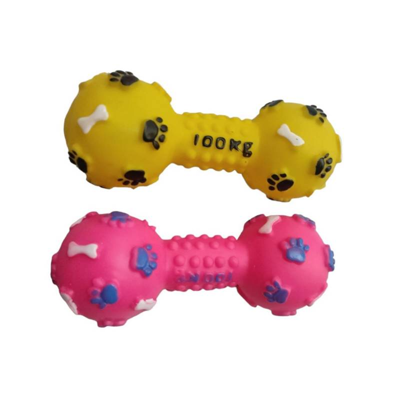

Top 3 juguetes preferidos por el perro
Pelota de juguete:

A Mocha le encanta su pelota de juguete porque rebota de manera impredecible, lo que despierta su instinto de perseguir y atrapar. La diversión interminable que proporciona hace que sea el juguete perfecto para largas sesiones de juego y ejercicio.
Mancuernas de juguete:
Mocha tiene un entusiasmo especial por sus mancuernas de juguete. Le gusta morderlas y llevarlas de un lado a otro, simulando ser un perrito fuerte y activo. Este juguete no solo le brinda diversión, sino que también le permite liberar energía de manera saludable.
Peluche de perro:

El peluche de perro es el compañero de siestas perfecto para Mocha. Le encanta acurrucarse con su suave peluche, sentir su textura reconfortante y, a veces, jugar suavemente como si estuviera interactuando con otro amigo perruno. Este juguete le proporciona consuelo y compañía.